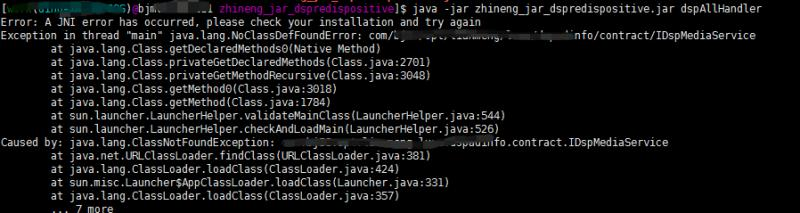
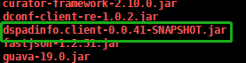
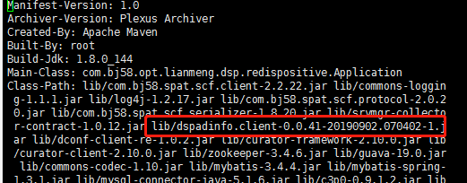
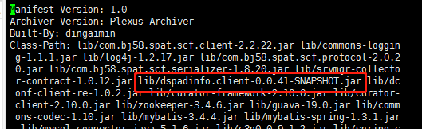

我们修改接口时，习惯发布一个快照版本用于测试。我们的一个服务也是发布了快照版本，然后一个jar程序要依赖这个服务，修改pom文件打包部署后，通过 java -jar 命令执行这个jar程序，然后你懂的启动后报错了
Exception in thread "main" java.lang.NoClassDefFoundError
...
Caused by: java.lang.ClassNotFoundException: ...
lib包下有这个接口从属的jar包

读到这里先不要往下看，想下为何会报找不到类呢？
在打包时会同时生成一个MANIFEST.MF文件，描述了jar包的基本信息
Main-Class 指定程序的入口，可以用java -jar *.jar 来启动
Class-Path 指定jar包依赖关系，类加载器会根据该路径来加载class
好的，我们了解了MANIFEST.MF文件，那么我们看下这个文件，可能有的读者还不清楚怎么找这个文件，解压你程序的jar就行，unzip *.jar 就可以看到了

看到Class-Path中报错的类在我用红框圈起的jar包中，可以发现这个jar包的名字和我们的lib包中对应的jar名字并不一样
lib包中是dspadinfo.client-0.0.41-SNAPSHOT.jar
而在MANIFEST.MF文件中是dspadinfo.client-0.0.41-20190902.070402-1.jar，是一个带有时间戳的形式，说明给Snapshot Version 这种快照版本的jar打包时用了唯一版本，这个是默认的，名字对不上，所以加载不到对应的类，报了上面的错
maven官方文档中有对处理快照版本的介绍，连接http://maven.apache.org/shared/maven-archiver/examples/classpath.html
要想强制使用 '-SNAPSHOT'的版本命名，只需要把
<useUniqueVersions>false</useUniqueVersions>给大家我的项目中的配置，作为参考
<plugin>
<groupId>org.apache.maven.plugins</groupId>
<artifactId>maven-jar-plugin</artifactId>
<configuration>
<archive>
<manifest>
<addClasspath>true</addClasspath>
<classpathPrefix>lib/</classpathPrefix>
<mainClass>*.dsp.redispositive.Application</mainClass>
<useUniqueVersions>false</useUniqueVersions>
</manifest>
</archive>
</configuration>
</plugin>修改完pom文件后，重新打包部署后，MANIFEST.MF文件中的Class-Path中的jar包就是 dspadinfo.client-0.0.41-SNAPSHOT.jar 执行没有问题

希望你遇到类似的问题，可以想到这个解决办法